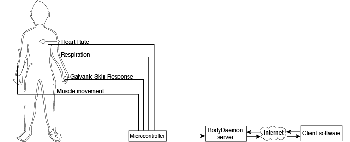

 BodyDaemon is a bio-responsive Internet server. Readings taken from a participants physical states, as measured by custom biofeedback sensors, are used to power and configure a fully-functional Internet server. For example, more or fewer socket connections are made available based on heart rate, changes in galvanic skin response (GSR) can abruptly close sockets, and muscle movements (EMG) can send data to the client. Other feature's such as logging can be turned on or off depending on a combination of factors.
BodyDaemon is part of larger investigations focusing on the development of protocols for the transfer of live biological information across the Internet. It represents the early stages of investigations into the viability of systems that alter their states based off of a person's changing physiological states and intentions - with the ultimate goal of accommodating the development of emergent states of mutual influence between human and machine in a networked ecosystem. System Description Server
Except for the biofeedback sensors, BodyDaemon follows a standard client/server model. The system consists of four different custom bio-sensors connected to a microcontroller. These include a heart rate monitor, a respiration sensor, a galvanic skin response sensor and a muscle (EMG) sensor. The signals from these sensors are then sent to the microcontroller which is connected to a desktop computer running the BodyDaemon server. The server itself is essentially an XML socket server. Messges between client and server take the form of XML streams over an open socket. The BodyDaemon server (as the name implies) runs as a daemon process, wating for the appropriate conditions in which to spawn to life. In this case the "appropriate conditions" are signals from the participant's body. When these signals collectively reach the right level, the daemon process is spawned and the server comes to life, ready to accept requests. Client
While not strictly necessary, a client application is included with BodyDaemon to visualize and sonify the server's/body's status. Note that this is just one of many possible renderings of the data coming from the server. Anyone is free and encouraged to make BodyDaemon clients. Think of the BodyDaemon server as sort of like a packet sniffer for bio-data. It just outputs data. To actually see or hear something interesting you need client software. The particular client I am building is a sort of "demo" client. BodyDaemon Protocol
BodyDaemon establishes a protocol for the transmission and retrieval of bio/server data from bio-responsive servers across the Internet. It takes the form of and XML schema which defines bodyml, or the BodyDaemon Markup Language. More information on the development of this protocol (as well as the sorce code for the server itself) can be found at http://ccastellanos.com/projects/bodydaemon URLs:
BodyDaemon :: Carlos Castellanos
http://ccastellanos.com/projects/bodydaemon
Carlos Castellanos
http://ccastellanos.com
http://switch.sjsu.edu/mambo/switch22/bodydaemon.html |